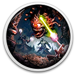

 Baldur's Gate II: Enhanced Edition
Details
 |
|
| Playtime | Not Played |
| Last Activity | Never |
| Added | 20/12/2024 16:41:22 |
| Modified | 18/05/2025 2:03:10 |
| Completion Status | Not Played |
| Library | Gog |
| Source | GOG |
| Platform | PC (Windows) |
| Release Date | 15/11/2013 |
| Community Score | 88 |
| Critic Score | 78 |
| User Score | |
| Genre | Adventure Role-playing (RPG) Strategy |
| Developer | Overhaul Games |
| Publisher | Atari, Inc. Beamdog |
| Feature | Co-Operative Multiplayer Single Player |
| Links | Official Steam iPhone Android GOG Wikia Wikipedia Epic iPad Twitch |
| Tag | Amazon Luna Atmospheric Choices Matter Classic CRPG Fantasy Isometric Magic Multiplayer Open World Real-Time Role-playing Story Rich Tabletop |
Description
Baldur's Gate II: Enhanced Edition includes the classic Baldur's Gate 2 Complete. More information here.
Continue a journey started in Baldur's Gate: Enhanced Edition, or customize a new hero to forge your path.


Kidnapped. Imprisoned. Tortured. The wizard Irenicus holds you captive in his stronghold, attempting to strip you of the powers that are your birthright.
Can you resist the evil in your blood and forsake the dark destiny that awaits you? Or will you embrace your monstrous nature and ascend to godhood as the new Lord of Murder?

The Classic Adventure Continues
Baldur's Gate II: Enhanced Edition is the beloved RPG classic, enhanced for modern adventurers.Continue a journey started in Baldur's Gate: Enhanced Edition, or customize a new hero to forge your path.
Campaign Content
The Enhanced Edition includes the original Shadows of Amn campaign, the Throne of Bhaal expansion, plus brand new challenges in the Black Pits II arena!
- Classic Campaign: The Original Shadows of Amn Adventure
- Expansion: Throne of Bhaal
- New Challenges: The Black Pits II: Gladiators of Thay, arena style battles
- New Difficulty Setting: Story Mode allows players to focus on story and exploration, rather than combat and survival
Epic Characters
- 11 Playable Classes plus dozens of subclasses
- Recruit Classic Characters like Minsc and his brave hamster, Boo!
- 5 New NPCs: Neera the Wild Mage, Dorn Il-Khan the Blackguard, Rasaad yn Bashir the Monk, Hexxat the Thief, and Wilson the Bear
- New player voice sets to customize your hero
- Upload Characters from Baldur’s Gate: Enhanced Edition, or forge ahead with a brand new hero
Classic Gameplay
- 2-D isometric graphics
- Real-time-with-pause combat
- Adapts 2nd Edition Dungeons & Dragons Rules
Enhanced for Modern Platforms
- Hundreds of bug fixes and improvements to the original game
- Native support for high-resolution widescreen displays
- Cross-play multiplayer support for Windows, Linux, and macOS
A Story-Rich RPG
Kidnapped. Imprisoned. Tortured. The wizard Irenicus holds you captive in his stronghold, attempting to strip you of the powers that are your birthright.
Can you resist the evil in your blood and forsake the dark destiny that awaits you? Or will you embrace your monstrous nature and ascend to godhood as the new Lord of Murder?